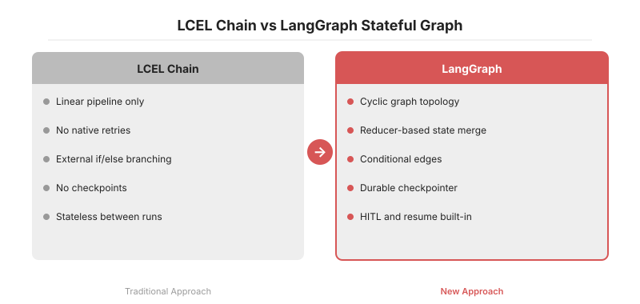
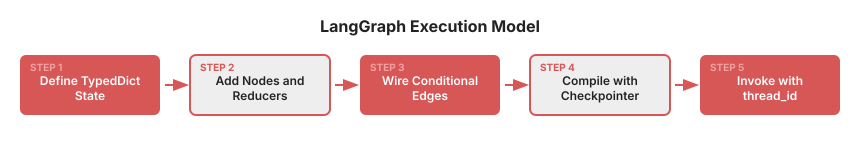

LCEL의 단방향 체인은 분기·재시도·HITL 같은 실무 에이전트 패턴을 표현하기 어렵습니다. 2025년 10월 GA된 LangGraph 1.0과 2026년 4월 공개된 1.1.8(29.6k★)은 Pregel/NetworkX 기반 그래프 위에 StateGraph·Reducer·Checkpointer를 구성하여 순환형 에이전트를 표준화합니다. 2026년 1월 도입된 StateSchema는 Zod·Pydantic 등 Standard Schema 라이브러리를 혼용할 수 있게 하였고, UntrackedValue·ReducedValue는 체크포인트에 포함할 상태와 런타임 전용 상태를 타입 레벨에서 분리합니다. 이 글은 StateGraph·Annotated reducer·conditional_edges·checkpoint 네 개 축을 중심으로 LangGraph의 설계 철학과 실무 도입 시 발생하는 함정을 정리합니다.
LCEL(LangChain Expression Language) 체인은 prompt | model | parser 같은 파이프라인을 간결하게 표현합니다. 다만 실무 에이전트에 투입하면 세 지점에서 한계가 드러납니다.
if를 강제로 삽입해야 합니다.LangGraph는 이 세 가지를 그래프 + 상태 + 체크포인터 세 축으로 해결합니다. 실행 모델은 Pregel/Apache Beam에서, 공개 API는 NetworkX에서 가져왔다고 공식 README가 명시합니다.
LangGraph의 기본 단위는 StateGraph입니다. TypedDict로 상태를 정의하고, 각 키에 reducer를 Annotated로 지정합니다. 여러 노드가 같은 키를 동시에 업데이트할 때 merge 전략을 선언형으로 지정하는 장치입니다.
from typing import Annotated, TypedDict
from langgraph.graph import StateGraph, START, END
from operator import add
class AgentState(TypedDict):
messages: Annotated[list, add] # 누적 (reducer = add)
retries: int # 덮어쓰기 (reducer 생략 = 기본 replace)
def retrieve(state): ...
def grade(state): ...
def generate(state): ...
g = StateGraph(AgentState)
g.add_node("retrieve", retrieve)
g.add_node("grade", grade)
g.add_node("generate", generate)
g.add_edge(START, "retrieve")
g.add_edge("retrieve", "grade")
g.add_conditional_edges(
"grade",
lambda s: "generate" if s["retries"] >= 2 or grade_ok(s) else "retrieve",
{"retrieve": "retrieve", "generate": "generate"},
)
g.add_edge("generate", END)
app = g.compile()
핵심은 add_conditional_edges의 두 번째 인자입니다. 상태를 받아 다음 노드 이름을 반환하는 순수 함수로 retry·fallback·early-exit 세 가지 패턴을 한 번에 표현합니다. 이 함수를 순수 함수로 유지해야 체크포인트 재개 시 결정적으로 재현됩니다. 실무에서 자주 누락되는 지점입니다.

LangGraph 1.0(2025-10 GA)의 핵심 셀링 포인트는 durable execution입니다. .compile(checkpointer=...) 한 줄로 매 스텝마다 상태 스냅샷이 저장되고, thread_id 단위로 중단·재개가 가능합니다.
from langgraph.checkpoint.sqlite import SqliteSaver
app = g.compile(
checkpointer=SqliteSaver.from_conn_string("checkpoints.db")
)
config = {"configurable": {"thread_id": "user-42"}}
app.invoke({"messages": [("user", "help me")]}, config)
# 서버 재시작, 머신 크래시, 다음 날 아침
app.invoke(None, config) # 중단된 노드부터 재개
멀티데이 승인 워크플로우, 백그라운드 job, 에이전트 장애 복구처럼 기존에 Temporal·Airflow 같은 워크플로우 엔진을 별도 운영해야 했던 케이스를 프레임워크 내부에서 처리합니다. 1.1 라인은 AsyncSqliteSaver, AsyncPostgresSaver 같은 비동기 체크포인터도 함께 제공하여 고빈도 tool 루프에서도 사용 가능합니다.

1.1.x(2025-12~2026-04, 최신 1.1.8)는 실무에서 불편했던 지점들을 직접 해결합니다.
TypedDict보다 런타임 검증·직렬화·JSON 스키마 export가 자연스럽습니다.요컨대 LangGraph는 "에이전트"를 그래프 알고리즘으로 환원하여 설계·디버그·재개 가능한 객체로 변환한 프레임워크입니다. 순환형 워크플로우를 명시적으로 기술할 수 있는 도구가 필요하다면, 2026년 현재 프로덕션에서 검증된 선택지로 판단됩니다.